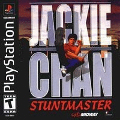

Jackie Chan - Stuntmasters

Jackie Chan Stuntmasters é um jogo eletrônico para PlayStation lançado em 2000. Baseado em cenas de filmes do ator e em algumas ideias do mesmo, o jogo é hoje considerado um clássico do gênero beat 'em up.

Jackie Chan Stuntmasters é um jogo eletrônico para PlayStation lançado em 2000. Baseado em cenas de filmes do ator e em algumas ideias do mesmo, o jogo é hoje considerado um clássico do gênero beat 'em up.